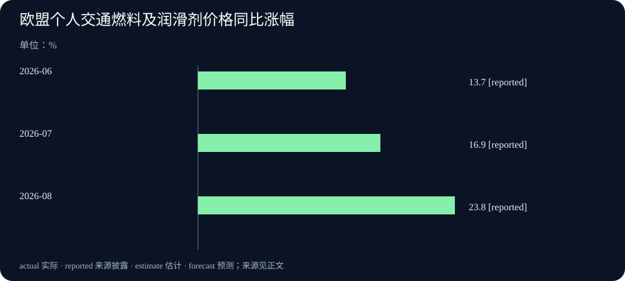

Daily Intelligence
2026-09-23｜Asia/Shanghai｜早间版
Today's Thesis｜理解信息之后，谁来决定行动
AI 正在降低理解复杂情境的成本，但理解并不自动带来正确行动：救灾、网络防御与企业算力建设的共同课题，是把分析能力接到可以核验、可以承担责任的现实流程上。
Executive Summary｜先看三条变化
- AI 与安全：微软披露打击 EvilTokens 的行动。这个案例值得关注的不是文字更像真人，而是攻击者把组织关系的理解纳入服务；事件数量来自微软调查，不是全行业发生率。微软披露
- 应用与商业：HASTE 灾害分析工具帮助响应者辨认受灾区域；印度新云区域则把基础设施投入带到运营阶段。前者仍需现场判断，后者仍有服务逐步上线，两种进展都需要具体业务结果来检验。救灾案例 · 印度云区域
- 产业与宏观：OECD 讨论钢铁过剩产能如何妨碍低排放转型；Eurostat 最新页面显示欧盟交通燃料价格压力上升。技术方案、融资条件和用户承受能力必须放在同一张账上。OECD 摘要 · Eurostat 数据
AI Daily｜从生成文字到理解处境
组织知识也会成为攻击面
微软在 9 月 22 日称，EvilTokens 与超过 12,000 个被入侵邮箱、超过 10,000 家机构有关；合作行动查扣了 50 个网站，并停用了 150 多个相关域名。这些是调查方披露的范围，不代表已经追回损失或消除所有后续风险。其特别之处在于利用邮箱内容分析组织关系与业务背景，使被盗信息更容易转化为欺诈机会。行动说明
本刊判断：业务知识与身份权限需要分开看待。一个请求能准确提到项目、同事和历史往来，只能说明发信者掌握了背景；它不能替代正式授权。企业在评估自动化助手时，也应关注它如何处理来源可信度不同的信息，而不只是回答是否流畅。
救灾场景把“看见”与“抵达”分开
微软公开介绍 HASTE 用灾前、灾后影像辅助识别损坏区域。案例提到，OCHA 将它与另外八种灾害制图产品放进共同浏览工具，并结合元数据与置信信息理解现场。开源形式也让当地合作伙伴能够按需求调整用途。文章描述的是参与方实践，没有提供可用于外推到所有灾害的统一准确率。项目与案例
本刊判断：地图更快出现，不等于救援队已经抵达。图像识别、道路可通行性、物资供应和现场协调各有约束。恰当的评价应跟踪分析是否改变了资源安排，同时检查遗漏地区与误报造成的代价；单看模型输出速度，会漏掉最重要的结果。
系统更新也有适用边界
微软 9 月 22 日的 Windows 11 26H1 预览更新说明列出图像搜索、内容提取、语义分析和设置模型等 AI 组件更新；文档明确这些组件适用于 Copilot+ PC，不适用于其他 Windows 客户端或 Windows Server。预览更新的存在不能直接推导为所有设备已经获得相同能力。官方更新说明
这给企业试点一个务实提醒：描述“我们已升级 AI”过于宽泛。需要注明设备范围、实际组件和验证环境。否则，演示机器上的能力容易被误认为整个组织的标准配置，培训、支持与验收便会建立在不同前提上。
Business Daily｜把投入拆成可验收的承诺
云基础设施：开区与服务齐备是两个里程碑。 微软称 Hyderabad 的 India South Central 已运行，采用三个可用区架构，额外 Azure 与 AI 服务会继续推出。供应商提供本地部署与治理选项，并不意味着客户无需自行判断适用要求。选型时应核对当前可用服务清单、故障恢复测试与实际成本，而不只看区域名称或远期投资总额。公司公告
钢铁转型：更新设备也要看旧产能怎么处理。 OECD 新政策论文的公开摘要指出，过剩产能可能压低价格和利润，影响企业为低排放技术融资；支持新技术的政策若没有处理总产能问题，也可能延续失衡。本期依据的是公开摘要，没有把尚未逐页核验的正文估算写入图表。论文摘要
本刊分析：不同企业可能同时面对“技术值得换、现金暂时不够”的局面。采购判断应区分工程可行性与资金可持续性；设备能正常运行，不能单独证明项目在实际价格、利用率和融资条件下能回本。这里的比较是一种分析框架，不主张钢铁与 AI 数据中心具有同样的成本曲线。
Macro Observation｜价格指标能说什么
Eurostat 9 月 22 日页面披露，欧盟个人交通工具燃料及润滑剂价格，6、7、8 月同比分别上涨 13.7%、16.9%、23.8%。这三个数值使用同比口径，不能与同页柴油或汽油的月度变化混为一谈。官方统计页面
可观察事实是这一特定消费类别的同比涨幅扩大；本刊推断是交通费用可能成为家庭和相关业务预算需要重新检查的变量。它不是总体物价指数，也不直接测量数据中心电价。将这组数据归因为 AI 扩张、用于预测某次央行决定，都会超出当前证据。
同比数值比较的是本月与一年前的价格，而不是与上个月。其变化可以来自当前价格，也可以受去年基数影响。对企业而言，更有用的问题是合同按什么价格调整、调整有多长滞后、成本由谁承担。相同外部价格变化，在不同合同中可能产生不同现金流压力。
这也解释了为什么生产率进展与成本压力可以同时存在。某项软件任务节省时间，并不能直接抵销运输、能源或融资支出的上升。管理者应分别观察任务单位成本与最终产品总成本，才能判断改善有没有穿过中间环节，真正落到用户或利润端。
Signal Dashboard｜进展与证据分开记录
| 信号 | 已取得的证据 | 暂时不能推出 | 下一项验证 |
|---|---|---|---|
| 网络犯罪服务受打击 | 微软披露处置行动与调查规模 | 风险已经彻底消失 | 后续处置与复发信息 |
| 灾害分析进入工作流 | 参与方介绍影像分析与协作案例 | 所有灾区均达到相同效果 | 漏报、误报及现场结果 |
| 印度云区域运行 | 公司说明区域状态与分阶段服务安排 | 所有目标服务已经齐备 | 当前服务目录与用户验收 |
| 钢铁低排放转型 | OECD 公开摘要中的机制分析 | 每家企业都面临同样约束 | 企业利用率与融资条件 |
| 欧盟交通燃料价格 | 官方分类指标的同比变化 | 总体通胀或 AI 用电成本 | 相同口径的后续数据 |
表格对应前文来源。不同证据不能相加成为一个“AI 景气度”分数。本期没有独立核验一致时点的股票、债券和加密资产行情，因此不拼接不同收盘时点的数据来制造市场同步反应。
Deep Insight｜理解关系的成本下降之后
以下是本刊分析，不是上述机构已经证明的统一结论。
过去，复杂工作中的一项重要成本是弄清楚处境：文件里谁负责什么，一片区域哪里最需要关注，一个项目究竟处于什么阶段。现在，我们需要更认真地区分三种活动：识别关系、选择目标、承担行动后果。模型可以帮助第一种活动，也可能辅助第二种活动，但第三种活动仍要求清楚的责任和反馈。
设想一个普通的售后流程。系统能很快读懂客户往来，把问题归入类别，甚至给出看似合理的补偿建议。真正困难的问题可能随后才出现：记录是否完整、客户是否同意、谁有权支付，以及一次错误决定会让谁承担损失。如果只统计回答时间，效率提升看起来很大；若把复核、争议和返工一起计入，结果可能不同。这是一个用于说明机制的假设案例，而不是对某家公司的实测。
由此可以提出一个判断：理解信息变便宜之后，可靠确认可能相对更有价值。原因不是确认工作突然变复杂，而是生成的候选解释和建议增加了。组织若维持原来的审核容量，每个审核者面对的任务便可能更多。瓶颈从“没有分析”转向“怎样知道哪项分析值得行动”，总流程速度未必随局部速度成比例提升。
第二个变化涉及信息的用途。同一份背景材料，既可能帮助员工服务客户，也可能在泄露后帮助外部人员猜测组织关系。保护边界因此不能只按单个字段是否敏感来理解；一些看似普通的信息组合起来，可能提供更丰富的上下文。这不是要求取消信息共享，而是提醒我们，将读懂信息的能力与作出承诺的权限分开，能够保留协作收益，同时减少一次误判的后果。
第三个变化是比较方法。企业容易把最成功的演示与旧流程的平均状态比较，却没有计算失败样本。更可靠的试点应提前定义任务范围，用相近难度的任务比较结果，记录人工介入和等待，并允许发现“某些步骤更快、整体暂未改善”。这种结果同样有价值，因为它指出下一笔投入应该解决哪个限制。
反方观点是：模型和工具会继续进步，当前的复核成本只是短暂过渡。这个观点有可能成立，不能把今天的边界当成永久规律。可检验的条件包括：在输入复杂度没有降低的情况下，返工和异常处理持续减少；新增自动化任务没有等比例增加监督成本；不同地点和团队也能复现效果。若这些证据出现，我们就应该上调对可扩展性的判断。
在证据出现之前，最值得做的不是给所有流程加一道形式审批，而是找到少数真正改变承诺、资源分配或外部状态的节点。在这些节点设置清楚的确认和记录，让低风险的信息整理保持流畅。这样，控制措施与任务后果相称，人的时间才会集中在机器能力进步后仍然稀缺的地方。
Tomorrow Watch｜等待下一项证据
- 观察口径：OECD 的日程页列出 9 月 23 日经济展望中期报告。早间版不提前引用尚未核实发布的增长预测；待正式发布后再区分预测、历史估计和修订。发布日程
- 企业部署：关注 India South Central 后续服务实际可用状态与客户案例，避免把计划上线的功能写成现成配置。持续追踪到验收证据出现，而不以再次发布宣传材料作为完成标准。
- 应用效果：关注灾害分析工具对现场资源分配的实际帮助，以及网络犯罪处置后是否出现新的影响披露。没有新证据时保留原判断，不人为制造“隔夜反转”。
观察清单覆盖本期之后的证据需求，并不承诺这些事项都会在次日发生。本期截止于上海早间核验时点；后续发布内容不回填为早间已知。
One Chart｜欧盟交通燃料同比涨幅

| 参考月份 | 同比变化 | 状态 |
|---|---|---|
| 2026 年 6 月 | 13.7% | 官方披露 |
| 2026 年 7 月 | 16.9% | 官方披露 |
| 2026 年 8 月 | 23.8% | 官方披露 |
范围为欧盟 HICP 中个人交通工具燃料及润滑剂类别，单位为百分比；不是价格水平，也不是月环比。来源地址包含 2025 字样，但本次打开页面的标题、发布日期及正文均标示 2026；这里按页面所披露版本引用，并明确保留这个地址差异，后续仍需关注官方修订。数据与口径
Quote of the Day｜从织布机看通用计算
“The Analytical Engine weaves algebraical patterns just as the Jacquard-loom weaves flowers and leaves.”
— Ada Lovelace
中文：分析机编织代数图案，就像雅卡尔织布机编织花朵与叶片。
出处：1843 年《分析机概述》译者注释 A，引用其中分句。原文转录
这个比喻的吸引力，在于把抽象操作放回可理解的工艺中。本刊借它提醒读者：理解一种新机器，可以从它组织什么关系开始；但优美的类比仍然不能替代对实际工作结果的检查。
Action Items｜把今天的信息变成可核验的问题
1. 为一项正在试用的 AI 流程画出三个步骤：读取信息、提出建议、改变外部状态。分别确定数据来源、确认人和结果证据，避免用一个“已完成”覆盖整个过程。 2. 抽取少量真实但已妥善去敏的任务，记录完整处理时间、人工介入和返工。先做小范围对照，再决定是否扩展；不要以最顺利的演示替代日常运行情况。 3. 对正在采购的云服务，要求提供当前可用清单与验收方法，把未来路线图单独存放。不同地区、不同设备的能力不应自动视为一致。 4. 检查预算中易受运输、能源或融资条件影响的项目，保留各自的统计口径和合同调整规则。先算自己的暴露，再讨论宏观新闻的影响。 5. 为一条重要判断写下会令自己改变看法的证据。记录反例和未取得的材料，让后续周月总结能够比较判断如何变化，而不仅是重述发生了哪些新闻。
本期新闻事实来自已打开的机构或公司原始页面；公司案例反映发布方披露，不等同于独立效果评估。机制分析均已与事实分开，不提供证券买卖建议。